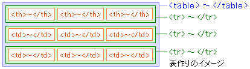

| HTML＞TABLE01 |
| <th>～</th> |
| 行や列の見出し（ヘッダ）＜th＞はタグで定義します。見出しに指定されたテキストは、一般てきには太字でセンタリングされて表示されます。 |
タグ リンク |
|---|
| 表（テーブル）を作りたい |
| 表の枠線を表示したい |
| 行や列に見出しを付けたい |
| キャプションを付けたい |
| キャプションの位置を指定したい |
| 行をグループ化したい |
| 列をグループ化したい |
| 列に属性を指定したい |
| 縦方向のセルを連結したい |
| 横方向のセルを連結したい |
| 表の位置を指定したい |
| 表に対する回り込みを解除したい |
<table>
<tr>
<th>見出しセル</th>
</tr>
<tr>
<td>データセル</td>
</tr>
</table>
